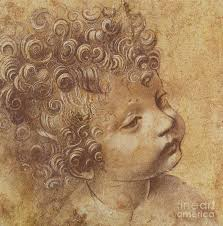
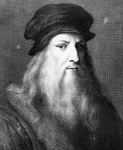
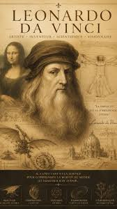

Leonardo da Vinci was born on 15 April 1452 in Vinci, Italy. From a young age, he showed exceptional talent in drawing, observation, and creative thinking. His curiosity about nature and science later influenced many of his works and inventions.

Leonardo became one of the most famous artists of the Renaissance period. He created masterpieces such as the Mona Lisa and The Last Supper. Besides art, he studied anatomy, engineering, architecture, and astronomy, making him one of history's greatest polymaths.

Leonardo da Vinci is remembered as a symbol of creativity and innovation. His notebooks, inventions, and artworks continue to inspire scientists, engineers, and artists around the world.
